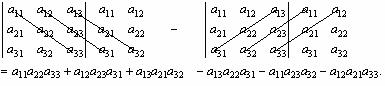
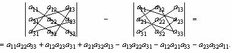

- В группе занимаются 40 человек, из них 20 человек изучают французский, 20 человек – английский язык, 14 человек – немецкий; английский и французский языки – 9 человек; немецкий и английский – 7 человек; немецкий и французский – 5 человек; все три языка – 2 человека. Сколько человек не изучают ни одного языка?
- Каждый из 500 студентов обязан посещать хотя бы один из трех спецкурсов: по математике, физике и астрономии. Три спецкурса посещают 10 студентов, по математике и физике – 30 студентов, по математике и астрономии – 25; спецкурс только по физике – 80 студентов. Известно также, что спецкурс по математике посещают 345 студентов, по физике – 145, по астрономии – 100 студентов. Сколько студентов посещают спецкурс только по астрономии? Сколько студентов посещают два спецкурса?
1.2. Матрицы. Операции над матрицами
Матрица – это удобный способ организации данных. Например, ведомость результатов вступительных экзаменов:
№ п/п |
Фамилия И О |
1. Биология |
2. Обществознание |
3. Русский язык |
1 |
Васильев В.В. |
45 |
58 |
49 |
2 |
Иванов И.И. |
52 |
63 |
54 |
3 |
Петров П.П. |
41 |
61 |
46 |
4 |
Сидоров С.С. |
64 |
82 |
57 |
можно записать в виде таблицы чисел (матрицы) вида:
 ,
,
где номера строк соответствуют порядковым номерам абитуриентов (по алфавиту), столбцы – порядковым номерам вступительных экзаменов. Содержательное значение каждого числа матрицы однозначно определяется его позицией, т.е. указанием номера строки и столбца, на пересечении которых это число находится. Так, число 61, стоящее в 3-ой строке 2-го столбца – это число баллов Петрова П.П. (№ п/п 3) по Обществознанию (2-ой экзамен).
Матрицей А размераm ´ n называется прямоугольная таблица чисел, состоящая из m строк и n столбцов. Числа этой таблицы называются элементами матрицы и обозначаются  :
:
 .
.
Элементы  составляют i-ю строку ( i =1, 2, …, m ) матрицы, элементы
составляют i-ю строку ( i =1, 2, …, m ) матрицы, элементы  - ее j-й столбец ( j =1, 2, …, n ).
- ее j-й столбец ( j =1, 2, …, n ).
Например,  - матрица размера
- матрица размера  с элементами
с элементами  ,
,  ,
,  ,
,  ,
,  ,
,  ,
,  ,
,  .
.
Матрица размером  , т.е. состоящая из одной строки, называется n-мерной матрицей-строкой.
, т.е. состоящая из одной строки, называется n-мерной матрицей-строкой.
Матрица, размером  , т.е. имеющая только один столбец, называется m-мерным матрицей-столбцом.
, т.е. имеющая только один столбец, называется m-мерным матрицей-столбцом.
Квадратной матрицей n-го порядка называется матрица размера  , т.е. число строк квадратной матрицы равно числу ее столбцов.
, т.е. число строк квадратной матрицы равно числу ее столбцов.
Например,  квадратная матрица 3-го порядка.
квадратная матрица 3-го порядка.
Элементы  квадратной матрицы образуют ее главную диагональ, а элементы
квадратной матрицы образуют ее главную диагональ, а элементы  - побочную диагональ.
- побочную диагональ.
Диагональной называется квадратная матрица, у которой все элементы вне главной диагонали (т.е. элементы с индексами  равны нулю.
равны нулю.
Например,  диагональная матрица 3-го порядка.
диагональная матрица 3-го порядка.
Треугольной называется квадратная матрица, у которой все элементы левее (или правее) диагональных элементов равны нулю.
Например,  или
или  треугольные матрицы.
треугольные матрицы.
Симметричной называется квадратная матрица, элементы которой удовлетворяют условию  . Например,
. Например,  симметричная матрица, т.к.
симметричная матрица, т.к. 
 ,
, 
 и
и 
 .
.
Единичной называется квадратная матрица, у которой все элементы главной диагонали равны 1, а остальные – нулю.
Например, Е =  единичная матрица третьего порядка.
единичная матрица третьего порядка.
Нулевой матрицей называется матрица, все элементы которой равны нулю. Например,  нулевая квадратная матрица 2-го порядка,
нулевая квадратная матрица 2-го порядка,  нулевая матрица порядка
нулевая матрица порядка  .
.
Две матрицы  и
и  - равны, если равны все их соответствующие элементы, т.е.
- равны, если равны все их соответствующие элементы, т.е.  .
.
Транспонированной к матрице называется матрица
называется матрица  , такая что
, такая что  , т.е. все строки транспонированной матрицы равны соответствующим столбцам матрицы А. Замена всех строк матрицы ее столбцами с соответствующими номерами называется транспонированием матрицы.
, т.е. все строки транспонированной матрицы равны соответствующим столбцам матрицы А. Замена всех строк матрицы ее столбцами с соответствующими номерами называется транспонированием матрицы.
Если , то
, то  .
.
Матрица называется ступенчатой, если крайний элемент каждой строки находится правее крайнего элемента предыдущей строки.
Элемент строки называется крайним, если он отличен от нуля, а все элементы этой строки левее его равны нулю. Первый ненулевой элемент первой строки – всегда крайний.
Например, в матрицах А и В подчеркнуты крайние элементы, при этом матрица В является ступенчатой, а матрица А – нет:

 .
.
Равносильными (элементарными) преобразованиями матрицы называются следующие операции:
- Перестановка двух строк (столбцов).
- Умножение строки (столбца) на число, не равное 0.
- Прибавление к элементам одной строки (столбца) соответствующих элементов другой строки (столбца).
Матрица В, полученная из матрицы А путем равносильных преобразований, называется эквивалентной матрице А и обозначается В ~ А .
Например, матрица 
 , т.к. получена из матрицы А путем перестановки 2-ой и 3-ей строк.
, т.к. получена из матрицы А путем перестановки 2-ой и 3-ей строк.
Операции над матрицами
Суммой матриц  и
и  называется такая матрица
называется такая матрица  , элементами которой являются числа, определяемые по формуле
, элементами которой являются числа, определяемые по формуле  .
.
Разностью матриц 
 и
и  называется матрица
называется матрица  , элементами которой являются числа, определяемые по формуле
, элементами которой являются числа, определяемые по формуле  .
.
Произведением матрицы  на число l называется матрица, полученная из матрицы А умножением всех ее элементов на число l:
на число l называется матрица, полученная из матрицы А умножением всех ее элементов на число l:  .
.
Произведением матриц  на матрицу
на матрицу  называется такая матрица
называется такая матрица  , элементами которой являются числа, определяемые по формуле
, элементами которой являются числа, определяемые по формуле  , т.е. элемент
, т.е. элемент  матрицы С равен сумме произведений элементов i-ой строки матрицы А на соответствующие элементы j-го столбца матрицы В.
матрицы С равен сумме произведений элементов i-ой строки матрицы А на соответствующие элементы j-го столбца матрицы В.
Произведение матриц определяется для квадратных матриц одного и то же порядка, а также для неквадратных матриц, у которых число столбцов матрицы-множимого равно числу строк матрицы-множителя, т.е.  .
.
Замечание. В общем случае АВ ¹ ВА. Если АВ=ВА, то матрицы называются перестановочными (коммутирующими).
Свойства операций над матрицами:
 ,
,  ;
;
 ,
,  ;
;
 ,
,  ;
;
 ,
,  ;
;
 ,
,  ;
;


 .
.
ПРИМЕРЫ
Пример 2.1. Транспонирование матриц:

 ;
; 

Пример 2.2. Приведение матрицы к ступенчатому виду путем элементарных преобразований над строками.
Примечание:При приведении матрицы к ступенчатому виду путем элементарных преобразований желательно (для удобства вычислений), чтобы крайние элементы были равны 1.
1) Крайний элемент I-ой строки равен единице. Поэтому ее оставляем без изменений. Для приведения к ступенчатому виду все первые элементы в строках ниже I-ой строки путем элементарных преобразований необходимо сделать равными 0. Поэтому, вместо II-ой строки запишем строку, являющуюся результатом сложения II-ой и I-ой строки, умноженной на (-3). Аналогично, вместо III-ой строки можно записать строку, являющуюся результатом сложения III-ой и I-ой строки, умноженной на 5:


 ~
~ 

2) Первую строку оставляем без изменений и выделяем крайний элемент ступеньки во второй строке. Однако, крайний элемент II (и III) строки не равны единице, но можно заметить, что, поделив III-ю строку на 3 (или, что одно и то же, умножив на  ), получим крайний элемент, равный 1:
), получим крайний элемент, равный 1:


3) Чтобы крайний элемент второй строки сделать, равным 1, переставим местами II-ую и III-ю строки:


4) Первую строку оставляем без изменений и выделяем крайний элемент ступеньки во второй строке (теперь он равен 1). Для приведения к ступенчатому виду все первые элементы в строках ниже II-ой строки также путем элементарных преобразований необходимо сделать равными нулю. Поэтому, вместо III-ей строки можно записать строку, являющуюся результатом сложения III и II-ой строки, умноженной на 2:


 .
.
Так как все крайние элементы полученной в результате элементарных преобразований матрицы каждой строки находится правее крайнего элемента предыдущей строки, то матрица  является ступенчатой.
является ступенчатой.
Пример 2.3. Вычисление суммы двух матриц:


 .
.
Пример 2.4. Вычисление разности двух матриц:


 .
.
Пример 2.5. Произведение матрицы на число:


 .
.
Пример 2.6. Произведение двух матриц разной размерности.
 ;
;  . Найти
. Найти  .
.
При вычислении произведения матриц разной размерности предварительно необходимо проверить выполнение условия, что число столбцов матрицы-множимого равно числу строк матрицы-множителя и определить размерность матрицы результата:  .
.


 .
.
Пример 2.7. Произведение двух квадратных матриц одного порядка:


 .
.
Пример 2.8. Вычислить значение матричного многочлена:  , где
, где  ,
,  ,
,  , Е- единичная матрица 3-го порядка.
, Е- единичная матрица 3-го порядка.
1) 


2)  .
.
3) 
4)  =
=
 +
+

 .
.
Ответ: 
Вопросы и упражнения для самоконтроля
- Перечислить основные виды матриц.
- Перечислить основные операции над матрицами и назвать налагаемые ограничения на соотношение размеров матриц при каждой операции.
- Провести сравнение операций над матрицами с операциями над действительными числами.
- Какую роль в операциях играют нулевая и единичная матрицы?
- Какую матрицу
 нужно прибавить к матрице
нужно прибавить к матрице  , чтобы получить единичную матрицу?
, чтобы получить единичную матрицу?
- Транспонировать матрицу
 и охарактеризовать ее.
и охарактеризовать ее.
- Вычислить значение матричного многочлена:
 , где
, где  , Е – единичная и О - нулевая матрицы 3-го порядка.
, Е – единичная и О - нулевая матрицы 3-го порядка.
УПРАЖНЕНИЯ
 . Найти
. Найти  .
.- Найти
 и
и  для матриц
для матриц  и
и  .
.
- Найти значение матричного многочлена
 , если
, если  :
:
а)  ; б)
; б)  ; в)
; в)  ;
;
г)  ; д)
; д)  ; е)
; е)  .
.
 ,
,  . Найти
. Найти  .
. ,
,  . Найти
. Найти  .
. ,
,  . Найти
. Найти  .
. ,
,  . Найти
. Найти  .
. ,
,  . Найти
. Найти  .
.
1.3. Определители
Любой квадратной матрице n-го порядка
можно поставить в соответствие число, которое называется определителем (детерминантом) матрицы А:
Определитель(детерминант) квадратной матрицы 2-го порядка определяется выражением:
.
Определитель квадратной матрицы 3-го порядка определяется по формуле:
Существуют удобные схемы для вычисления определителя третьего порядка:
1)

2) правило “треугольника” (правило Саррюса)

Минором элемента  (обозначение ) матрицы А называется определитель матрицы, полученной из исходной матрицы вычеркиванием i-ой строки и j-ого столбца.
(обозначение ) матрицы А называется определитель матрицы, полученной из исходной матрицы вычеркиванием i-ой строки и j-ого столбца.
Минор элемента  ,умноженный на , называется алгебраическим дополнением элемента (обозначение ): .
,умноженный на , называется алгебраическим дополнением элемента (обозначение ): .
Схема знаков для матриц 3-го и 4-го порядка: , .
Свойства определителей
1. Определитель не изменяется при замене всех его строк соответствующими столбцами, т.е. .
2. Определитель меняет знак на противоположный при перестановке двух строк (или столбцов).
3. Определитель с двумя одинаковыми строками (или столбцами) равен нулю.
4. Определитель равен нулю, если все элементы некоторой строки (или столбца) равны нулю.
5. Множитель, общий для всех элементов некоторой строки (или столбца), можно вынести за знак определителя.
6. Определитель не изменится, если к элементам некоторой строки (или столбца) прибавить соответствующие элементы другой строки (или столбца), предварительно умножив их на один и тот же множитель.
7. Определитель равен сумме произведений элементов любой строки (или столбца) на их алгебраические дополнения:
Свойство 7 является еще одним способом вычисления определителей и называется методом разложения по строке (или столбцу). Например, для матрицы третьего порядка с учетом знаков алгебраических дополнений, получим:
Метод разложения по строке (или столбцу) значительно упрощает вычисление определителей, если в какой-либо строке (или столбце) все элементы, кроме одного равны нулю.
ПРИМЕРЫ
Пример 3.1. Вычисление определителя 2-го порядка:
Пример 3.2. Вычисление определителя 3-го порядка (по схеме):
Пример 3.3. Вычисление определителя 3-го порядка методом разложения по строке:
Пример 3.4. Вычисление определителя 3-го порядка методом разложения по столбцу с предварительными упрощающими преобразованиями:
Пример 3.5. Решить уравнение:
Решение: Применив метод разложения по столбцу для вычисления определителя, получим:
Отсюда, решая квадратное уравнение, находим, что x=2 или 3.
Проверка:
.
.
Ответ: x = {2; 3}.
Вопросы и упражнения для самоконтроля
Вычислить определители:
УПРАЖНЕНИЯ
Вычислить определители:
Вычислить определитель методом разложения по строке (столбцу), преобразовав его при необходимости:
Решить уравнение:
1.4. Ранг матрицы
Минором k-го порядка матрицы А называется определитель k-го порядка, составленный из элементов данной матрицы, стоящих на пересечении каких-либо подряд идущих k строк и k столбцов.
Отдельные элементы матрицы являются минорами 1-го порядка, т.к. стоят на пересечении одной строки и одного столбца.
Рангом матрицы А (, )называется наибольший из порядков ее миноров, не равных нулю.
Базисным минором называется любой из отличных от нуля миноров матрицы А, порядок которого равен .
Например, ранг матрицы равен 1 (), т.к. любой из миноров 2-го порядка матрицы А равен нулю, и существует хотя бы один минор 1-го порядка, не равный 0, например, . Базисным минором матрицы А является каждый из ненулевых миноров 1-го порядка и, собственно, каждый из ненулевых элементов: ; ; ; .
Ранг матрицы равен 2 (), т.к. существует минор 2-го порядка , а миноров 3-го порядка у матрицы А нет. Единственный базисный минор матрицы А – минор .
Эквивалентные матрицы имеют одинаковые ранги: если В ~ А, то , т.к. при элементарных преобразованиях ранг матрицы не изменяется.
Ранг ступенчатой матрицы равен количеству ее ненулевых строк.
Один из методов определения ранга матрицы – метод равносильных (элементарных) преобразований, который заключается в привидении матрицы А путем элементарных преобразований к ступенчатому виду и подсчету ненулевых строк полученной ступенчатой матрицы.
ПРИМЕРЫ
Пример 4.1. Определение ранга матрицы методом элементарных преобразований.
1) Приведение матрицы к ступенчатому виду:
~ ~ ~ .
2) Полученная ступенчатая матрица содержит две ненулевых строки, следовательно, ее ранг и, соответственно, ранг исходной матрицы равен 2.
Ответ:
Пример 4.2. Определить ранг матрицы .
1) Приведение матрицы к ступенчатому виду:
~ ~ ~ ~
~ ~ ~ ~ .
2) Полученная ступенчатая матрица содержит три ненулевых строки, следовательно, ее ранг и, соответственно, ранг исходной матрицы равен 3.
Ответ:
УПРАЖНЕНИЯ
Определить ранг матрицы (методом элементарных преобразований):
1.5. Системы линейных уравнений
Пусть задана система m линейных уравнений с n неизвестными:

где числа  (
(
 ) – коэффициенты системы; числа
) – коэффициенты системы; числа  свободные члены; переменные
свободные члены; переменные  неизвестные.
неизвестные.
Решением системы линейных уравнений называется множество значений неизвестных  , удовлетворяющих одновременно каждому уравнению этой системы.
, удовлетворяющих одновременно каждому уравнению этой системы.
Решить систему уравнений означает найти все ее решения или показать, что решений нет.
Система уравнений называется совместной, если она имеет хотя бы одно решение, и несовместной, если она не имеет ни одного решения.
Совместная система называется определенной, если она имеет только одно решение, и неопределенной, если она имеет более одного решения.
Если все свободные члены равны нулю ( ), то система линейных уравнений называется однородной.
), то система линейных уравнений называется однородной.
Систему линейных уравнений можно записать в матричной форме: 
где  матрица системы,
матрица системы,  столбец (или вектор-столбец) неизвестных,
столбец (или вектор-столбец) неизвестных,  столбец свободных членов.
столбец свободных членов.
Матрица  называется расширенной матрицей системы.
называется расширенной матрицей системы.
Система линейных уравнений совместна тогда и только тогда, когда ранг матрицы системы А равен рангу расширенной матрицы системы  (теорема Кронекера-Капелли):
(теорема Кронекера-Капелли):  .
.
Исследование системы линейных уравнений заключается в определении ее типа: совместна – несовместна, определенна – неопределенна.
При этом возможны три варианта:
- если
 , где n – число неизвестных, то система совместна и определенна;
, где n – число неизвестных, то система совместна и определенна;
- если
 , то система совместна и неопределенна;
, то система совместна и неопределенна;
- если
 , то система несовместна.
, то система несовместна.
Однородная система линейных уравнений всегда совместна, так как всегда существует тривиальное решение  . Однородная система неопределенна, если
. Однородная система неопределенна, если  .
.
Метод Гаусса (метод последовательного исключения неизвестных) является одним из основных методов исследования и решения систем линейных уравнений.
Для наглядности рассмотрим алгоритм этого метода на частном примере системы из 3-х уравнений с 3 неизвестными.
- Выписать из заданной системы линейных уравнений
 расширенную матрицу:
расширенную матрицу:  .
.
- Привести расширенную матрицу
 системы к ступенчатому виду
системы к ступенчатому виду  . При этом возможны три вида расширенных ступенчатых матриц, соответствующих трем типам систем линейных уравнений.
. При этом возможны три вида расширенных ступенчатых матриц, соответствующих трем типам систем линейных уравнений.
а) Система совместна и определенна: 
 .
.
б) Система совместна и неопределенна: 
 .
.
в) Система несовместна: 
 .
.
- Найти решение для совместной системы.
а) Для определенной системы по расширенной ступенчатой матрице восстановить уравнения в виде: 
и разрешаем полученные уравнения, начиная с последнего.
Из III-го уравнения получим  ; из II-го уравнения –
; из II-го уравнения –  ; из I-го уравнения –
; из I-го уравнения –  .
.
б) Для неопределенной системы аналогично по расширенной ступенчатой матрице восстановить уравнения в виде:
 .
.
Затем в уравнении, соответствующем последней ненулевой строке, выбрать  * неизвестных в качестве свободных переменных, т.е. таких, которые могут принимать любое значение из множества действительных чисел. А все остальные неизвестные выразить в виде числовой функции, зависящей от свободных переменных.
* неизвестных в качестве свободных переменных, т.е. таких, которые могут принимать любое значение из множества действительных чисел. А все остальные неизвестные выразить в виде числовой функции, зависящей от свободных переменных.
В нашем частном случае  . Во 2-ом уравнении (соответствует последней ненулевой строке) одну из неизвестных
. Во 2-ом уравнении (соответствует последней ненулевой строке) одну из неизвестных  объявляем свободной.
объявляем свободной.
Пусть, например, 
 R.
R.
Тогда из II-го уравнения –  ; из I-го уравнения –
; из I-го уравнения –  .
.
Решение неопределенной системы линейных уравнений, выраженное в виде функций от  свободных переменных, называется общим решением системы.
свободных переменных, называется общим решением системы.
Модифицированный метод Гаусса (метод Жордана – Гаусса)
Алгоритм исследования и решения систем линейных уравнений с помощью метода Жордана – Гаусса состоит в следующем.
- Выписать расширенную матрицу системы:
 .
.
- Выбрать отличный от нуля элемент
 . Этот элемент называется разрешающим (или ведущим) элементом, p-й столбец – разрешающим (или ведущим) столбцом, а q-я строка – разрешающей (или ведущей) строкой.
. Этот элемент называется разрешающим (или ведущим) элементом, p-й столбец – разрешающим (или ведущим) столбцом, а q-я строка – разрешающей (или ведущей) строкой.
- Переписать (q-ю) строку в новую систему уравнений (если элемент
 , то предварительно умножим эту строку на
, то предварительно умножим эту строку на  , в результате чего получим
, в результате чего получим  ).
).
- Вычислить все остальные элементы системы и свободные члены по формулам (правило прямоугольника):
 .
.
В результате 3 – 4 шагов алгоритма в ведущем столбце получаем  (при
(при  ) и
) и  :
:  .
.
Таким образом, неизвестное  является разрешенным, т.к. коэффициенты при
является разрешенным, т.к. коэффициенты при  во всех уравнениях системы, кроме q-го, равны нулю.
во всех уравнениях системы, кроме q-го, равны нулю.
- В расширенной матрице
 выбрать следующий ведущий (разрешающий) элемент
выбрать следующий ведущий (разрешающий) элемент  (т.е. элемент, расположенный обязательно в другой строке и другом еще неразрешенном столбце). Повторить 3 – 4 шаги алгоритма для элемента
(т.е. элемент, расположенный обязательно в другой строке и другом еще неразрешенном столбце). Повторить 3 – 4 шаги алгоритма для элемента  вместо
вместо  .
.
Шаг 5 повторять пока не будут разрешены все возможные неизвестные  (случай совместной системы) или не будет получено противоречивое уравнение вида
(случай совместной системы) или не будет получено противоречивое уравнение вида  , которое свидетельствует о несовместности системы.
, которое свидетельствует о несовместности системы.
Метод Крамера (решение систем линейных уравнений с помощью определителей)
Если определитель системы n линейных уравнений с n неизвестными  , то система уравнений имеет единственное решение, которое находится по формулам Крамера
, то система уравнений имеет единственное решение, которое находится по формулам Крамера
 , где
, где определитель системы;
определитель системы;
 определитель, получаемый из определителя системы
определитель, получаемый из определителя системы  заменой i-го столбца столбцом свободных членов:
заменой i-го столбца столбцом свободных членов:
 ;
;  ; ... ;
; ... ; 
Если определитель однородной системы n линейных уравнений с n неизвестными  , то единственное решение определяется сразу:
, то единственное решение определяется сразу:  .
.
ПРИМЕРЫ
Пример 5.1. Решить систему линейных уравнений: 
Решение системы методом Гаусса.
1) Приведение расширенной матрицы системы к ступенчатому виду:


~ 

 .
.
 Система совместна и определенна.
Система совместна и определенна.
2) Разрешение неизвестных из восстановленной (ступенчатой) системы уравнений: 
 ;
;  ;
;  ;
;  .
.
Ответ: 
Проверка: 
Решение системы методом Жордана – Гаусса.


~ 


 .
.
( Система совместна и определенна).
Система совместна и определенна).
 Ответ:
Ответ:  Проверка:
Проверка: 
Пример 5.2. Решить систему линейных уравнений: 
Решение системы методом Гаусса.
1) Приведение расширенной матрицы системы к ступенчатому виду:


~

 .
.
* Здесь

ранг матрицы системы.
 Система совместна и неопределенна.
Система совместна и неопределенна.
2) Восстановление системы уравнений и разрешение неизвестных: 
Так как  , то из III-го уравнения (соответствует последней ненулевой строке) выберем одну переменную в качестве свободной.
, то из III-го уравнения (соответствует последней ненулевой строке) выберем одну переменную в качестве свободной.
Пусть 
 R.
R.
Тогда из III-го уравнения –  ;
;
из II-го уравнения –  ;
;
из I-го уравнения –  .
.
Ответ:  общее решение.
общее решение.
Проверка: 
Решение системы методом Жордана – Гаусса.


 ~
~ 
~
 .
.
После эквивалентных преобразований разрешенными оказались все неизвестные, кроме  (т.к. именно ему соответствует IV столбец матрицы системы), а разрешающий (ведущий) элемент в данном случае можно выбирать только в 4-ой строке, что невозможно из-за ее обнуления. Таким образом,
(т.к. именно ему соответствует IV столбец матрицы системы), а разрешающий (ведущий) элемент в данном случае можно выбирать только в 4-ой строке, что невозможно из-за ее обнуления. Таким образом,  Система совместна и неопределенна.
Система совместна и неопределенна.
Восстановим систему уравнений из последней матрицы: 
Пусть  , как неразрешенное неизвестное, будет свободной переменной:
, как неразрешенное неизвестное, будет свободной переменной: 
 R.
R.
Тогда из I-го уравнения –  ;
;
из II-го уравнения –  ;
;
из III-го уравнения –  .
.
Ответ:  общее решение.
общее решение.
Проверка: 
Пример 5.3. Решить систему линейных уравнений: 
Решение системы методом Гаусса.
1) Приведение расширенной матрицы системы к ступенчатому виду:


~


 Система несовместна и множество решений пусто.
Система несовместна и множество решений пусто.
Ответ: Æ.
Решение системы методом Жордана – Гаусса.


~


Система несовместна и множество решений пусто. Ответ: Æ.
Пример 5.4. Решить систему линейных уравнений методом Крамера: 
Решение:
 Система совместна и определенна.
Система совместна и определенна.
Тогда: 

 и
и


Ответ:  .
.
Проверка: 
Пример 5.5. Решить систему линейных уравнений методом Крамера: 
Решение: 
Система совместна и определенна и, т.к. система уравнений является однородной, то единственное решение:  .
.
Ответ:  .
.
Вопросы и упражнения для самоконтроля
- Что называется линейным уравнением? Приведите примеры линейных и нелинейных уравнений.
- Что называется решением системы линейных уравнений?
- Что означает задание: решить систему уравнений?
- Какие различают виды систем линейных уравнений и как? Сколько решений у них может быть?
- Есть ли преимущества метода Гаусса перед методом Крамера и какие?
- Есть ли преимущества метода Крамера перед методом Гаусса и какие?
- Есть ли преимущества метода Жордана перед методом Гаусса и какие?
УПРАЖНЕНИЯ
Решить систему уравнений методом Гаусса (или Жордана-Гаусса).
Решить систему уравнений методом Крамера.
Контрольная работа по теме: «Линейная алгебра»
(тренировочный вариант)
№ 1. По заданным на числовой прямой промежуткам А = (3; 5]и B = (4; 9] определить  ;
;  ;
;  ;
;  и
и  .
.
№ 2. Вычислить значение матричного многочлена:  , где
, где  ,
,  ,
,  ,
,  единичная матрица 3-го порядка.
единичная матрица 3-го порядка.
№ 3. Решить систему линейных уравнений методом Гаусса: 
№ 4. Решить систему линейных уравнений методом Крамера: 
ОТВЕТЫ
1.1. Понятие множества. Операции над множествами
1.4. 9 чел.; 8 чел. 1.5. 11 чел.; 1 чел.; 4 чел. 1.6. 5 чел. 1.7. 40 чел.; 70 чел.
1.2. Матрицы. Операции над матрицами
1.8.  ; 1.9.
; 1.9.  , – ; 1.10. а)
, – ; 1.10. а)  , б)
, б)  , в)
, в)  , г)
, г)  , д)
, д)  , е)
, е)  ; 1.11.
; 1.11.  ; 1.12.
; 1.12.  ; 1.13.
; 1.13.  ; 1.14.
; 1.14.  ; 1.15.
; 1.15.  .
.
1.3. Определители
1.19. 1; 1.20. 2; 1.21. – 10; 1.22. 72; 1.23. 68; 1.24. 0; 1.25. – 2; 1.26. 1; 1.27. 13; 1.28. 0; 1.29. 2; 1.30. 10; 1.31. 144; 1.32. – 2; 1.33. – 12; 1.34. 4; 1.35. 9;
1.36. 11; 1.37. 0; -2; 1.38. 2; 1.39. 5.
1.4. Ранг матрицы
1.40. 2; 1.41. 3; 1.42. 2; 1.43. 3; 1.44. 3; 1.45. 2; 1.46. 2; 1.47. 2; 1.48. 4; 1.49. 4; 1.50. 2; 1.51. 3.
1.5. Системы линейных уравнений
1.52.  ; 1.53.
; 1.53.  ; 1.54.
; 1.54.  ; 1.55.
; 1.55.  ; 1.56.
; 1.56.  ; 1.57.
; 1.57.  ; 1.58. Æ; 1.59. Æ; 1.60.
; 1.58. Æ; 1.59. Æ; 1.60.  ;
;
1.61.  ; 1.62.
; 1.62.  ; 1.63.
; 1.63.  ; 1.64.
; 1.64.  ; 1.65.
; 1.65.  ; 1.66.
; 1.66.  ; 1.67.
; 1.67.  ; 1.68.
; 1.68.  ; 1.69.
; 1.69.  ;
;
1.70.  .
.
Контрольная работа по теме: «Линейная алгебра»
(тренировочный вариант)
№ 1. 
 ;
;  (3; 9];
(3; 9];  = (4; 5];
= (4; 5];  = (3; 4];
= (3; 4]; 
 ;
;
№ 2. 


 ; № 3.
; № 3.  ; № 4.
; № 4.  .
.
ЛИТЕРАТУРА
-
Владимирский Б.М., Горстко А.Б., Ерусалимский Я.М. Математика. Общий курс: Учебник. – СПб.: Издательство «Лань», 2004. – 960 с.
-
Выгодский М.Я. Справочник по высшей математике. – М.: ООО «Издательство Астрель»: ООО «Издательство АСТ», 2005. – 991 с.
-
Данко П.Е., Попов А.Г., Кожевникова Т.Я. Высшая математика в упражнениях и задачах. В 2-х частях. Ч.1: Учеб. пособие для втузов. – М.: Высш. шк., 1997. – 304 с.
-
Кожухов И.Б., Прокофьев А.А. Математика. Школьникам и абитуриентам. – М.: Махаон, 2005. – 480 с.
-
Кричевец А.Н., Шикин Е.В., Дьячков А.Г. Математика для психологов: Учебник. – М.: Флинта: Московский психолого-социальный институт, 2003. – 376 с.
-
Лунгу К.Н., Письменный Д.Т., Федин С.Н., Шевченко Ю.А. Сборник задач по высшей математике. 1 курс. – М.: Айрис-пресс, 2006. – 576 с.
-
Меняйлов А.И. Математический практикум: Учебное пособие для высшей школы. – М.: Академический Проект, 2003. – 192 с.
-
Сборник формул по математике (Карманный справочник) – М.: АСТ: Астрель, 2005. – 159 с.
-
Шипачев В.С. Задачник по высшей математике: Учеб. пособие для вузов. – М.: Высш. шк., 2004. – 304 с.

 Решение:
Решение: